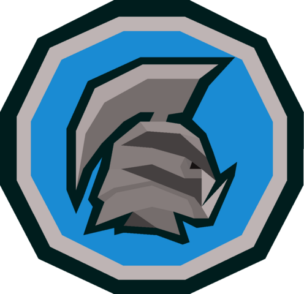
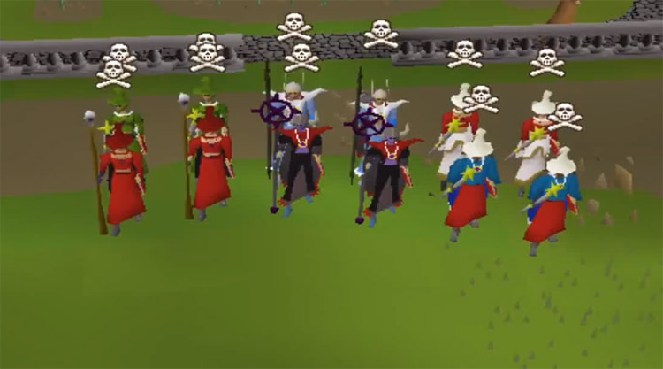

Mains
The "Main" account is the default account type in Old School RuneScape. Main accounts have no restrictions
on the content they can interact with. Trading with other players, use of a bank, engaging in PVP,
and all other activities are open to this account type.
Some players maintain more than one regular account to assist their main account in various activities, such
as holding supplies in a second inventory while defeating a boss. This type of account is known unofficially as an "alt",
or alternative account.
Ironman Mode
Ironman mode is an official account type which places a restriction upon your account. The standard Ironman account
is exactly like a Main with one major restriction: you cannot trade with other players. This restriction forces
players to collect all items and equipment by themselves, as a kind of single player experience.
In addition to standard Ironman mode, there are several variations. Hardcore Ironman mode builds
upon Ironman with the additional restriction of only having one life. Dying for any reason will revoke your Hardcore
status, removing you from the High Scores and reverting your account to a regular Ironman.
For an even greater challenge, Ultimate Ironman mode removes the ability to store items in a bank. Main
and Ironman accounts are both allowed to store up to 800 items in a bank for safekeeping. Ultimate Ironmen
cannot use this bank - they are limited to using only their 28 inventory slots.

PVP
PVP accounts, known as "Pures", are an unoffical account type created for the purpose of
optimizing Player vs Player performance. These accounts often leave their Defense stat at level 1, allowing them
to deal large amounts of damage while staying at a low combat level.
